Motion identity study 05
Precision signal

CODICALHEALTH
PRECISION IN CODING, POWER IN REVENUE
Refined choreography: shaped signal → calibrated node echo → mass-aware assembly → exact master mark.
Runtime: 0.92 seconds, one play, permanently still afterward.